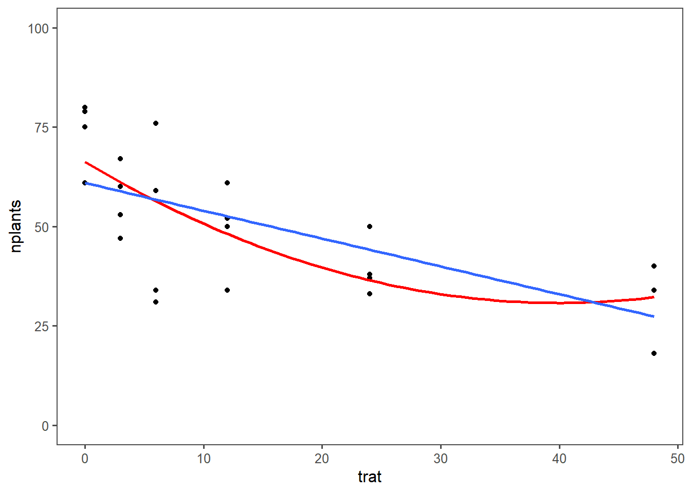
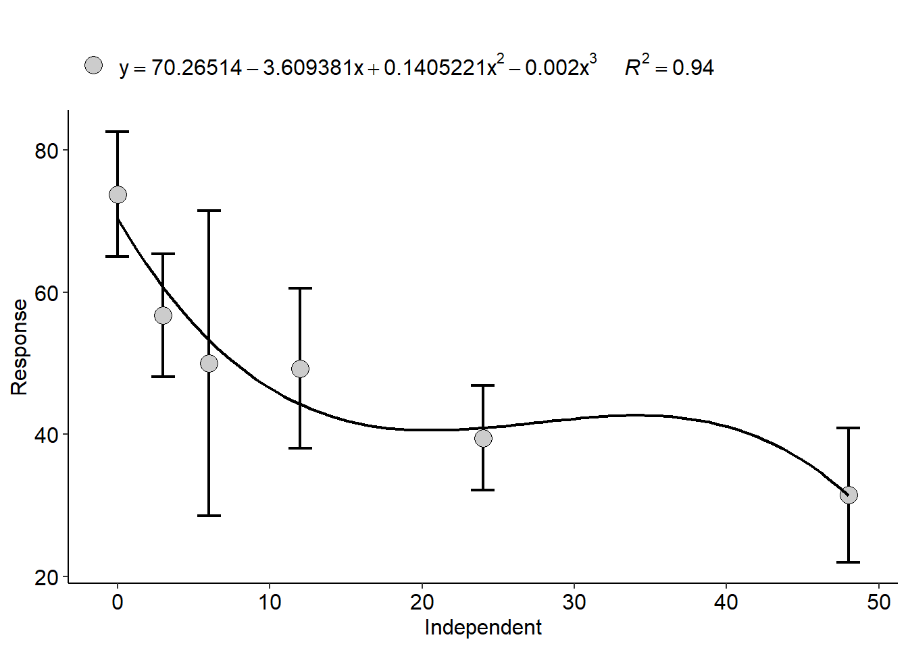

library(gsheet)
library(tidyverse)
library(ggthemes)
library(lme4)
library(r4pde)
library(broom)
library(car)
library(patchwork)Regressão Linear
Em experimentos onde o fator avaliado é classificado como quantitativo seu efeito deve ser estudado por meio de uma relação funcional entre o mesmo e a variável resposta. A técnica indicada neste caso é a análise de regressão.
Trabalharemos com um conjunto de dados onde o fator testado é quatitativo.
Pacotes necessários
Importação e Vizualização Gráfica dos Dados
estande <- gsheet2tbl("https://docs.google.com/spreadsheets/d/1bq2N19DcZdtax2fQW9OHSGMR0X2__Z9T/edit#gid=401662555")
estande |>
ggplot(aes(trat, nplants))+
geom_jitter(width = 0.1, alpha = 0.2)+
stat_summary(fun.data = "mean_cl_boot", color = 'black', size = 0.5)+
theme_few()+
geom_smooth(method = "lm", se = FALSE)`geom_smooth()` using formula = 'y ~ x'
Modelo Linear Simples ou de Primeira Ordem
Criando um filtro para avaliar os dados correspodentes ao primeiro experimento
exp1 = estande |>
filter(exp == 1)
# Vizualização gráfica:
exp1 |>
ggplot(aes(trat, nplants))+
geom_point()+
theme_few()+
ylim(0,100)+
geom_smooth(method = "lm", se = F)`geom_smooth()` using formula = 'y ~ x'
Ajustando o Modelo Linear através do lm():
lm1 <- lm(nplants ~ trat,
data = exp1)
summary(lm1)
Call:
lm(formula = nplants ~ trat, data = exp1)
Residuals:
Min 1Q Median 3Q Max
-25.500 -6.532 1.758 8.573 27.226
Coefficients:
Estimate Std. Error t value Pr(>|t|)
(Intercept) 52.5000 4.2044 12.487 1.84e-11 ***
trat -0.2419 0.1859 -1.301 0.207
---
Signif. codes: 0 '***' 0.001 '**' 0.01 '*' 0.05 '.' 0.1 ' ' 1
Residual standard error: 15 on 22 degrees of freedom
Multiple R-squared: 0.07148, Adjusted R-squared: 0.02928
F-statistic: 1.694 on 1 and 22 DF, p-value: 0.2066Repetindo para o segundo e terceiro experimento
exp2 = estande |>
filter(exp == 2)
exp2 |>
ggplot(aes(trat, nplants))+
geom_point()+
theme_few()+
ylim(0,100)+
geom_smooth(method = "lm", se = F)`geom_smooth()` using formula = 'y ~ x'
lm2 <- lm(nplants ~ trat,
data = exp2)
summary(lm2)
Call:
lm(formula = nplants ~ trat, data = exp2)
Residuals:
Min 1Q Median 3Q Max
-25.7816 -7.7150 0.5653 8.1929 19.2184
Coefficients:
Estimate Std. Error t value Pr(>|t|)
(Intercept) 60.9857 3.6304 16.798 4.93e-14 ***
trat -0.7007 0.1605 -4.365 0.000247 ***
---
Signif. codes: 0 '***' 0.001 '**' 0.01 '*' 0.05 '.' 0.1 ' ' 1
Residual standard error: 12.95 on 22 degrees of freedom
Multiple R-squared: 0.4641, Adjusted R-squared: 0.4398
F-statistic: 19.05 on 1 and 22 DF, p-value: 0.0002473exp3 = estande |>
filter(exp == 3)
exp3 |>
ggplot(aes(trat, nplants))+
geom_point()+
theme_few()+
ylim(0,100)+
geom_smooth(method = "lm", se = F)`geom_smooth()` using formula = 'y ~ x'Warning: Removed 3 rows containing non-finite outside the scale range
(`stat_smooth()`).Warning: Removed 3 rows containing missing values or values outside the scale range
(`geom_point()`).
lm3 <- lm(nplants ~ trat, data = exp3)
summary(lm3)
Call:
lm(formula = nplants ~ trat, data = exp3)
Residuals:
Min 1Q Median 3Q Max
-26.5887 -3.9597 0.7177 5.5806 19.8952
Coefficients:
Estimate Std. Error t value Pr(>|t|)
(Intercept) 95.7500 2.9529 32.425 < 2e-16 ***
trat -0.7634 0.1306 -5.847 6.97e-06 ***
---
Signif. codes: 0 '***' 0.001 '**' 0.01 '*' 0.05 '.' 0.1 ' ' 1
Residual standard error: 10.53 on 22 degrees of freedom
Multiple R-squared: 0.6085, Adjusted R-squared: 0.5907
F-statistic: 34.19 on 1 and 22 DF, p-value: 6.968e-06Vale lembrar que para ajustar modelos lineares simples os dados devem atender as pressuposições da ANOVA já ensinadas
Modelo Linear Generalizado (GLM)
Utilizaremos o Critério de Informação de Akaike (AIC) para verificar a qualidade dos modelos testados
Fazendo para os dados do terceito experimento e assumindo uma distribuição gaussiana, temos:
glm3 <- glm(nplants ~ trat,
data = exp3)
summary(glm3)
Call:
glm(formula = nplants ~ trat, data = exp3)
Coefficients:
Estimate Std. Error t value Pr(>|t|)
(Intercept) 95.7500 2.9529 32.425 < 2e-16 ***
trat -0.7634 0.1306 -5.847 6.97e-06 ***
---
Signif. codes: 0 '***' 0.001 '**' 0.01 '*' 0.05 '.' 0.1 ' ' 1
(Dispersion parameter for gaussian family taken to be 110.9787)
Null deviance: 6235.8 on 23 degrees of freedom
Residual deviance: 2441.5 on 22 degrees of freedom
AIC: 185.04
Number of Fisher Scoring iterations: 2AIC(glm3)[1] 185.0449Assumindo uma distribuição de poisson, temos:
glm3b <- glm(nplants ~ trat,
family = "poisson" (link = "log"),
data = exp3)
summary(glm3b)
Call:
glm(formula = nplants ~ trat, family = poisson(link = "log"),
data = exp3)
Coefficients:
Estimate Std. Error z value Pr(>|z|)
(Intercept) 4.571590 0.029539 154.762 < 2e-16 ***
trat -0.009965 0.001488 -6.697 2.13e-11 ***
---
Signif. codes: 0 '***' 0.001 '**' 0.01 '*' 0.05 '.' 0.1 ' ' 1
(Dispersion parameter for poisson family taken to be 1)
Null deviance: 77.906 on 23 degrees of freedom
Residual deviance: 29.952 on 22 degrees of freedom
AIC: 183.93
Number of Fisher Scoring iterations: 4AIC(glm3b) [1] 183.9324Quanto menor o valor de AIC, melhor é o modelo
Modelos Lineares Generalizados de Efeitos Mistos (GLMMs)
GLMMs são uma extensão dos GLMs que incorporam efeitos mistos, combinando efeitos fixos e aleatórios. Eles são especialmente úteis em situações onde há correlação ou variabilidade nos dados que podem ser atribuídas a diferentes níveis hierárquicos ou grupos.
Você pode utilizar os GLMMs através da função glmer.
glmer3 <- glmer(nplants ~ trat + (trat | exp), data = estande)Warning in glmer(nplants ~ trat + (trat | exp), data = estande): calling
glmer() with family=gaussian (identity link) as a shortcut to lmer() is
deprecated; please call lmer() directlyWarning in checkConv(attr(opt, "derivs"), opt$par, ctrl = control$checkConv, :
Model failed to converge with max|grad| = 0.00274249 (tol = 0.002, component 1)summary(glmer3)Linear mixed model fit by REML ['lmerMod']
Formula: nplants ~ trat + (trat | exp)
Data: estande
REML criterion at convergence: 580.8
Scaled residuals:
Min 1Q Median 3Q Max
-2.0988 -0.6091 0.1722 0.6360 1.9963
Random effects:
Groups Name Variance Std.Dev. Corr
exp (Intercept) 510.68405 22.5983
trat 0.05516 0.2349 -0.82
Residual 167.91303 12.9581
Number of obs: 72, groups: exp, 3
Fixed effects:
Estimate Std. Error t value
(Intercept) 69.7452 13.2146 5.278
trat -0.5687 0.1643 -3.462
Correlation of Fixed Effects:
(Intr)
trat -0.731
optimizer (nloptwrap) convergence code: 0 (OK)
Model failed to converge with max|grad| = 0.00274249 (tol = 0.002, component 1)AIC(glmer3)[1] 592.8402GLMMs assumindo uma distribuição de poisson
glmer3b <- glmer(nplants ~ trat + (trat|exp), family = poisson(link = "log"),
data = estande)
summary(glmer3b)Generalized linear mixed model fit by maximum likelihood (Laplace
Approximation) [glmerMod]
Family: poisson ( log )
Formula: nplants ~ trat + (trat | exp)
Data: estande
AIC BIC logLik deviance df.resid
660.7 672.1 -325.4 650.7 67
Scaled residuals:
Min 1Q Median 3Q Max
-3.6247 -0.8083 0.1042 0.9601 3.6511
Random effects:
Groups Name Variance Std.Dev. Corr
exp (Intercept) 6.425e-02 0.253478
trat 1.602e-05 0.004003 -0.17
Number of obs: 72, groups: exp, 3
Fixed effects:
Estimate Std. Error z value Pr(>|z|)
(Intercept) 4.223397 0.147793 28.577 < 2e-16 ***
trat -0.010434 0.002538 -4.111 3.93e-05 ***
---
Signif. codes: 0 '***' 0.001 '**' 0.01 '*' 0.05 '.' 0.1 ' ' 1
Correlation of Fixed Effects:
(Intr)
trat -0.192AIC(glmer3b)[1] 660.7282wm <- WhiteMoldSoybean
wm |>
ggplot(aes(inc, yld, group = factor(study)))+
geom_point()+
#facet_wrap(~ study)+
geom_smooth(method = "lm", se= F)`geom_smooth()` using formula = 'y ~ x' theme_minimal()List of 136
$ line :List of 6
..$ colour : chr "black"
..$ linewidth : num 0.5
..$ linetype : num 1
..$ lineend : chr "butt"
..$ arrow : logi FALSE
..$ inherit.blank: logi TRUE
..- attr(*, "class")= chr [1:2] "element_line" "element"
$ rect :List of 5
..$ fill : chr "white"
..$ colour : chr "black"
..$ linewidth : num 0.5
..$ linetype : num 1
..$ inherit.blank: logi TRUE
..- attr(*, "class")= chr [1:2] "element_rect" "element"
$ text :List of 11
..$ family : chr ""
..$ face : chr "plain"
..$ colour : chr "black"
..$ size : num 11
..$ hjust : num 0.5
..$ vjust : num 0.5
..$ angle : num 0
..$ lineheight : num 0.9
..$ margin : 'margin' num [1:4] 0points 0points 0points 0points
.. ..- attr(*, "unit")= int 8
..$ debug : logi FALSE
..$ inherit.blank: logi TRUE
..- attr(*, "class")= chr [1:2] "element_text" "element"
$ title : NULL
$ aspect.ratio : NULL
$ axis.title : NULL
$ axis.title.x :List of 11
..$ family : NULL
..$ face : NULL
..$ colour : NULL
..$ size : NULL
..$ hjust : NULL
..$ vjust : num 1
..$ angle : NULL
..$ lineheight : NULL
..$ margin : 'margin' num [1:4] 2.75points 0points 0points 0points
.. ..- attr(*, "unit")= int 8
..$ debug : NULL
..$ inherit.blank: logi TRUE
..- attr(*, "class")= chr [1:2] "element_text" "element"
$ axis.title.x.top :List of 11
..$ family : NULL
..$ face : NULL
..$ colour : NULL
..$ size : NULL
..$ hjust : NULL
..$ vjust : num 0
..$ angle : NULL
..$ lineheight : NULL
..$ margin : 'margin' num [1:4] 0points 0points 2.75points 0points
.. ..- attr(*, "unit")= int 8
..$ debug : NULL
..$ inherit.blank: logi TRUE
..- attr(*, "class")= chr [1:2] "element_text" "element"
$ axis.title.x.bottom : NULL
$ axis.title.y :List of 11
..$ family : NULL
..$ face : NULL
..$ colour : NULL
..$ size : NULL
..$ hjust : NULL
..$ vjust : num 1
..$ angle : num 90
..$ lineheight : NULL
..$ margin : 'margin' num [1:4] 0points 2.75points 0points 0points
.. ..- attr(*, "unit")= int 8
..$ debug : NULL
..$ inherit.blank: logi TRUE
..- attr(*, "class")= chr [1:2] "element_text" "element"
$ axis.title.y.left : NULL
$ axis.title.y.right :List of 11
..$ family : NULL
..$ face : NULL
..$ colour : NULL
..$ size : NULL
..$ hjust : NULL
..$ vjust : num 1
..$ angle : num -90
..$ lineheight : NULL
..$ margin : 'margin' num [1:4] 0points 0points 0points 2.75points
.. ..- attr(*, "unit")= int 8
..$ debug : NULL
..$ inherit.blank: logi TRUE
..- attr(*, "class")= chr [1:2] "element_text" "element"
$ axis.text :List of 11
..$ family : NULL
..$ face : NULL
..$ colour : chr "grey30"
..$ size : 'rel' num 0.8
..$ hjust : NULL
..$ vjust : NULL
..$ angle : NULL
..$ lineheight : NULL
..$ margin : NULL
..$ debug : NULL
..$ inherit.blank: logi TRUE
..- attr(*, "class")= chr [1:2] "element_text" "element"
$ axis.text.x :List of 11
..$ family : NULL
..$ face : NULL
..$ colour : NULL
..$ size : NULL
..$ hjust : NULL
..$ vjust : num 1
..$ angle : NULL
..$ lineheight : NULL
..$ margin : 'margin' num [1:4] 2.2points 0points 0points 0points
.. ..- attr(*, "unit")= int 8
..$ debug : NULL
..$ inherit.blank: logi TRUE
..- attr(*, "class")= chr [1:2] "element_text" "element"
$ axis.text.x.top :List of 11
..$ family : NULL
..$ face : NULL
..$ colour : NULL
..$ size : NULL
..$ hjust : NULL
..$ vjust : num 0
..$ angle : NULL
..$ lineheight : NULL
..$ margin : 'margin' num [1:4] 0points 0points 2.2points 0points
.. ..- attr(*, "unit")= int 8
..$ debug : NULL
..$ inherit.blank: logi TRUE
..- attr(*, "class")= chr [1:2] "element_text" "element"
$ axis.text.x.bottom : NULL
$ axis.text.y :List of 11
..$ family : NULL
..$ face : NULL
..$ colour : NULL
..$ size : NULL
..$ hjust : num 1
..$ vjust : NULL
..$ angle : NULL
..$ lineheight : NULL
..$ margin : 'margin' num [1:4] 0points 2.2points 0points 0points
.. ..- attr(*, "unit")= int 8
..$ debug : NULL
..$ inherit.blank: logi TRUE
..- attr(*, "class")= chr [1:2] "element_text" "element"
$ axis.text.y.left : NULL
$ axis.text.y.right :List of 11
..$ family : NULL
..$ face : NULL
..$ colour : NULL
..$ size : NULL
..$ hjust : num 0
..$ vjust : NULL
..$ angle : NULL
..$ lineheight : NULL
..$ margin : 'margin' num [1:4] 0points 0points 0points 2.2points
.. ..- attr(*, "unit")= int 8
..$ debug : NULL
..$ inherit.blank: logi TRUE
..- attr(*, "class")= chr [1:2] "element_text" "element"
$ axis.text.theta : NULL
$ axis.text.r :List of 11
..$ family : NULL
..$ face : NULL
..$ colour : NULL
..$ size : NULL
..$ hjust : num 0.5
..$ vjust : NULL
..$ angle : NULL
..$ lineheight : NULL
..$ margin : 'margin' num [1:4] 0points 2.2points 0points 2.2points
.. ..- attr(*, "unit")= int 8
..$ debug : NULL
..$ inherit.blank: logi TRUE
..- attr(*, "class")= chr [1:2] "element_text" "element"
$ axis.ticks : list()
..- attr(*, "class")= chr [1:2] "element_blank" "element"
$ axis.ticks.x : NULL
$ axis.ticks.x.top : NULL
$ axis.ticks.x.bottom : NULL
$ axis.ticks.y : NULL
$ axis.ticks.y.left : NULL
$ axis.ticks.y.right : NULL
$ axis.ticks.theta : NULL
$ axis.ticks.r : NULL
$ axis.minor.ticks.x.top : NULL
$ axis.minor.ticks.x.bottom : NULL
$ axis.minor.ticks.y.left : NULL
$ axis.minor.ticks.y.right : NULL
$ axis.minor.ticks.theta : NULL
$ axis.minor.ticks.r : NULL
$ axis.ticks.length : 'simpleUnit' num 2.75points
..- attr(*, "unit")= int 8
$ axis.ticks.length.x : NULL
$ axis.ticks.length.x.top : NULL
$ axis.ticks.length.x.bottom : NULL
$ axis.ticks.length.y : NULL
$ axis.ticks.length.y.left : NULL
$ axis.ticks.length.y.right : NULL
$ axis.ticks.length.theta : NULL
$ axis.ticks.length.r : NULL
$ axis.minor.ticks.length : 'rel' num 0.75
$ axis.minor.ticks.length.x : NULL
$ axis.minor.ticks.length.x.top : NULL
$ axis.minor.ticks.length.x.bottom: NULL
$ axis.minor.ticks.length.y : NULL
$ axis.minor.ticks.length.y.left : NULL
$ axis.minor.ticks.length.y.right : NULL
$ axis.minor.ticks.length.theta : NULL
$ axis.minor.ticks.length.r : NULL
$ axis.line : list()
..- attr(*, "class")= chr [1:2] "element_blank" "element"
$ axis.line.x : NULL
$ axis.line.x.top : NULL
$ axis.line.x.bottom : NULL
$ axis.line.y : NULL
$ axis.line.y.left : NULL
$ axis.line.y.right : NULL
$ axis.line.theta : NULL
$ axis.line.r : NULL
$ legend.background : list()
..- attr(*, "class")= chr [1:2] "element_blank" "element"
$ legend.margin : 'margin' num [1:4] 5.5points 5.5points 5.5points 5.5points
..- attr(*, "unit")= int 8
$ legend.spacing : 'simpleUnit' num 11points
..- attr(*, "unit")= int 8
$ legend.spacing.x : NULL
$ legend.spacing.y : NULL
$ legend.key : list()
..- attr(*, "class")= chr [1:2] "element_blank" "element"
$ legend.key.size : 'simpleUnit' num 1.2lines
..- attr(*, "unit")= int 3
$ legend.key.height : NULL
$ legend.key.width : NULL
$ legend.key.spacing : 'simpleUnit' num 5.5points
..- attr(*, "unit")= int 8
$ legend.key.spacing.x : NULL
$ legend.key.spacing.y : NULL
$ legend.frame : NULL
$ legend.ticks : NULL
$ legend.ticks.length : 'rel' num 0.2
$ legend.axis.line : NULL
$ legend.text :List of 11
..$ family : NULL
..$ face : NULL
..$ colour : NULL
..$ size : 'rel' num 0.8
..$ hjust : NULL
..$ vjust : NULL
..$ angle : NULL
..$ lineheight : NULL
..$ margin : NULL
..$ debug : NULL
..$ inherit.blank: logi TRUE
..- attr(*, "class")= chr [1:2] "element_text" "element"
$ legend.text.position : NULL
$ legend.title :List of 11
..$ family : NULL
..$ face : NULL
..$ colour : NULL
..$ size : NULL
..$ hjust : num 0
..$ vjust : NULL
..$ angle : NULL
..$ lineheight : NULL
..$ margin : NULL
..$ debug : NULL
..$ inherit.blank: logi TRUE
..- attr(*, "class")= chr [1:2] "element_text" "element"
$ legend.title.position : NULL
$ legend.position : chr "right"
$ legend.position.inside : NULL
$ legend.direction : NULL
$ legend.byrow : NULL
$ legend.justification : chr "center"
$ legend.justification.top : NULL
$ legend.justification.bottom : NULL
$ legend.justification.left : NULL
$ legend.justification.right : NULL
$ legend.justification.inside : NULL
$ legend.location : NULL
$ legend.box : NULL
$ legend.box.just : NULL
$ legend.box.margin : 'margin' num [1:4] 0cm 0cm 0cm 0cm
..- attr(*, "unit")= int 1
$ legend.box.background : list()
..- attr(*, "class")= chr [1:2] "element_blank" "element"
$ legend.box.spacing : 'simpleUnit' num 11points
..- attr(*, "unit")= int 8
[list output truncated]
- attr(*, "class")= chr [1:2] "theme" "gg"
- attr(*, "complete")= logi TRUE
- attr(*, "validate")= logi TRUEmofo1 <- lm(yld ~ inc,
data = wm)
summary(mofo1)
Call:
lm(formula = yld ~ inc, data = wm)
Residuals:
Min 1Q Median 3Q Max
-1657.85 -594.50 -91.32 531.76 1693.15
Coefficients:
Estimate Std. Error t value Pr(>|t|)
(Intercept) 3299.619 56.451 58.451 < 2e-16 ***
inc -9.261 2.108 -4.393 1.45e-05 ***
---
Signif. codes: 0 '***' 0.001 '**' 0.01 '*' 0.05 '.' 0.1 ' ' 1
Residual standard error: 745.8 on 380 degrees of freedom
Multiple R-squared: 0.04833, Adjusted R-squared: 0.04582
F-statistic: 19.3 on 1 and 380 DF, p-value: 1.452e-05fit_all <- wm |>
group_by(study) |>
do(tidy(lm(.$yld ~ .$inc), conf.int = TRUE))
fit_all# A tibble: 70 × 8
# Groups: study [35]
study term estimate std.error statistic p.value conf.low conf.high
<dbl> <chr> <dbl> <dbl> <dbl> <dbl> <dbl> <dbl>
1 1 (Intercept) 3329. 86.8 38.3 4.60e-13 3138. 3520.
2 1 .$inc -14.2 2.08 -6.85 2.78e- 5 -18.8 -9.64
3 2 (Intercept) 2682. 48.6 55.2 8.55e-15 2575. 2789.
4 2 .$inc -6.93 1.49 -4.66 6.89e- 4 -10.2 -3.66
5 3 (Intercept) 4017. 61.6 65.2 1.37e-15 3882. 4153.
6 3 .$inc -18.6 1.71 -10.9 3.11e- 7 -22.4 -14.9
7 4 (Intercept) 2814. 151. 18.6 1.15e- 9 2481. 3147.
8 4 .$inc -43.5 16.8 -2.58 2.56e- 2 -80.5 -6.38
9 5 (Intercept) 3317. 234. 14.2 2.07e- 8 2802. 3832.
10 5 .$inc -21.2 5.69 -3.72 3.36e- 3 -33.7 -8.67
# ℹ 60 more rowsg_inter <- fit_all |>
filter(term == "(Intercept)") |>
ggplot(aes(x = estimate))+
theme_r4pde()+
geom_histogram(bins = 8, color = "white", fill = "gray50")+
labs(x = "Intercept", y = "frequency")
g_slop <- fit_all |>
filter(term == ".$inc") |>
ggplot(aes(x = estimate))+
theme_r4pde()+
geom_histogram(bins = 8, color = "white", fill = "gray50")+
labs(x = "Slopes", y = "Frequency")
g_inter + g_slop
df <- fit_all |>
filter(term == ".$inc")
mean(df$estimate)[1] -19.52932mofo2 <- lmer(yld ~ inc + (inc | study), data = wm,
REML = F)Warning in checkConv(attr(opt, "derivs"), opt$par, ctrl = control$checkConv, :
Model failed to converge with max|grad| = 0.416806 (tol = 0.002, component 1)summary(mofo2)Linear mixed model fit by maximum likelihood ['lmerMod']
Formula: yld ~ inc + (inc | study)
Data: wm
AIC BIC logLik deviance df.resid
5319.4 5343.1 -2653.7 5307.4 376
Scaled residuals:
Min 1Q Median 3Q Max
-3.7078 -0.5991 -0.0295 0.5077 3.2364
Random effects:
Groups Name Variance Std.Dev. Corr
study (Intercept) 557573.08 746.708
inc 36.85 6.071 -0.29
Residual 37228.73 192.947
Number of obs: 382, groups: study, 35
Fixed effects:
Estimate Std. Error t value
(Intercept) 3455.432 128.063 26.98
inc -17.236 1.451 -11.88
Correlation of Fixed Effects:
(Intr)
inc -0.300
optimizer (nloptwrap) convergence code: 0 (OK)
Model failed to converge with max|grad| = 0.416806 (tol = 0.002, component 1)Anova(mofo2)Analysis of Deviance Table (Type II Wald chisquare tests)
Response: yld
Chisq Df Pr(>Chisq)
inc 141.09 1 < 2.2e-16 ***
---
Signif. codes: 0 '***' 0.001 '**' 0.01 '*' 0.05 '.' 0.1 ' ' 1confint(mofo2, method = "Wald") 2.5 % 97.5 %
.sig01 NA NA
.sig02 NA NA
.sig03 NA NA
.sigma NA NA
(Intercept) 3204.43403 3706.43096
inc -20.08046 -14.39219Modelo Linear Quadrático ou de Segunda Ordem
Um Modelo Linear de Segunda Ordem (também conhecido como modelo quadrático) é uma extensão do modelo linear de primeira ordem que inclui termos quadráticos para capturar relações curvilíneas entre a variável dependente e as variáveis independentes.
Esse tipo de modelo é útil quando a relação entre as variáveis não é bem representada por uma linha reta, mas sim por uma curva parabólica.
A seguir faremos um comparação da utilização um modelo linear de primeira e segunda ordem para o próximo conjunto de dados
Importação e Vizualização dos Dados
estande <- gsheet2tbl("https://docs.google.com/spreadsheets/d/1bq2N19DcZdtax2fQW9OHSGMR0X2__Z9T/edit#gid=401662555")
exp2 <- estande |> filter(exp == 2)
exp2 |>
ggplot(aes(trat, nplants))+
geom_point()+
theme_few()+
ylim(0, 100)+
geom_smooth(method = "lm",
se = F,
formula = y~poly(x,2),
color = "red")+
geom_smooth(method = "lm", se = FALSE)`geom_smooth()` using formula = 'y ~ x'
O gráfico acima contém uma comparação (modelo simples em azul e o modelo quadrático em vermelho) entre ambos os modelos. Concluiremos com base nas análises estatístics à seguir.
Modelo de primeira ordem
lm2 <- lm(nplants~trat,
data = exp2)
summary(lm2)
Call:
lm(formula = nplants ~ trat, data = exp2)
Residuals:
Min 1Q Median 3Q Max
-25.7816 -7.7150 0.5653 8.1929 19.2184
Coefficients:
Estimate Std. Error t value Pr(>|t|)
(Intercept) 60.9857 3.6304 16.798 4.93e-14 ***
trat -0.7007 0.1605 -4.365 0.000247 ***
---
Signif. codes: 0 '***' 0.001 '**' 0.01 '*' 0.05 '.' 0.1 ' ' 1
Residual standard error: 12.95 on 22 degrees of freedom
Multiple R-squared: 0.4641, Adjusted R-squared: 0.4398
F-statistic: 19.05 on 1 and 22 DF, p-value: 0.0002473hist(residuals(lm2))
Modelo de segunda ordem
exp2$trat2 <- exp2$trat^2
lm3 <-lm(nplants ~trat + trat2,
data = exp2)
summary(lm3)
Call:
lm(formula = nplants ~ trat + trat2, data = exp2)
Residuals:
Min 1Q Median 3Q Max
-25.439 -6.019 1.789 8.016 19.561
Coefficients:
Estimate Std. Error t value Pr(>|t|)
(Intercept) 66.30156 4.42097 14.997 1.08e-12 ***
trat -1.77720 0.58467 -3.040 0.00623 **
trat2 0.02223 0.01166 1.906 0.07036 .
---
Signif. codes: 0 '***' 0.001 '**' 0.01 '*' 0.05 '.' 0.1 ' ' 1
Residual standard error: 12.24 on 21 degrees of freedom
Multiple R-squared: 0.5432, Adjusted R-squared: 0.4997
F-statistic: 12.49 on 2 and 21 DF, p-value: 0.0002675hist(residuals(lm3))
Comparando os modelos
Realizando a comparação pelo AIC, temos
AIC(lm2)[1] 194.9597AIC(lm3)[1] 193.1284Com isso, observamos que o modelo linear se segunda ordem foi o melhor.
Outro Método de Comparação de Modelos Lineares
O pacote AgroR tem funções que nos permitem comparar diferentes modelos. A conclusão é baseada no valor de R², que, quanto maior, mais preciso é o modelo (diferente do AIC).
Veja como usá-lo para o mesmo conjunto de dados:
library(AgroR)
with(exp2, polynomial(trat, nplants, grau = 1))
----------------------------------------------------
Regression Models
----------------------------------------------------
Estimate Std. Error t value Pr(>|t|)
(Intercept) 60.9857143 3.6304377 16.798447 4.929311e-14
trat -0.7006912 0.1605226 -4.365063 2.473272e-04
----------------------------------------------------
Deviations from regression
----------------------------------------------------
Df SSq MSQ F p-value
Linear 1 3196.203 3196.2031 21.82329 0.0001899378
Deviation 4 1054.172 263.5430 1.79944 0.1729687460
Residual 18 2636.250 146.4583 [[1]]
with(exp2, polynomial(trat, nplants, grau = 2))
----------------------------------------------------
Regression Models
----------------------------------------------------
Estimate Std. Error t value Pr(>|t|)
(Intercept) 66.30156250 4.42096799 14.997069 1.079972e-12
trat -1.77719814 0.58467380 -3.039640 6.230050e-03
I(trat^2) 0.02222876 0.01165948 1.906496 7.036247e-02
----------------------------------------------------
Deviations from regression
----------------------------------------------------
Df SSq MSQ F p-value
Linear 1 3196.2031 3196.2031 21.823293 0.0001899378
Quadratic 1 544.5029 544.5029 3.717801 0.0697619482
Deviation 3 509.6690 169.8897 1.159986 0.3523240106
Residual 18 2636.2500 146.4583 [[1]]
with(exp2, polynomial(trat, nplants, grau = 3))
----------------------------------------------------
Regression Models
----------------------------------------------------
Estimate Std. Error t value Pr(>|t|)
(Intercept) 70.265143802 5.300440019 13.256474 2.295186e-11
trat -3.609380523 1.514625525 -2.383018 2.720299e-02
I(trat^2) 0.140522077 0.091192577 1.540938 1.390058e-01
I(trat^3) -0.001712445 0.001309648 -1.307561 2.058546e-01
----------------------------------------------------
Deviations from regression
----------------------------------------------------
Df SSq MSQ F p-value
Linear 1 3196.2031 3196.2031 21.8232929 0.0001899378
Quadratic 1 544.5029 544.5029 3.7178008 0.0697619482
Cubic 1 247.7520 247.7520 1.6916208 0.2097934169
Deviation 2 261.9170 130.9585 0.8941691 0.4263523326
Residual 18 2636.2500 146.4583 [[1]]
Observa-se que o R² melhora conforme o aumento do grau. No entanto, não podemos aceitar o grau 3, pois o estande não aumenta a concentração de inóculo. O grau 2 é o mais adequado neste caso.
Modelo não linear
Modelos não lineares são utilizados quando a relação entre a variável dependente e as variáveis independentes não pode ser adequadamente descrita por uma função linear.
Podemos utilizar modelos não lineares na análise estatística dos dados provenientes de um experimento que avaliou seis doses de um fungicida na inibição da germinação de conídios de vinte diferentes isolados.
Importando, modificando e vizualizando os dados
sensi <- gsheet2tbl("https://docs.google.com/spreadsheets/d/1bq2N19DcZdtax2fQW9OHSGMR0X2__Z9T/edit#gid=465348652")
sensi2 <- sensi|>
group_by(code, dose) |>
summarise(mean_germination = mean(germination))`summarise()` has grouped output by 'code'. You can override using the
`.groups` argument.sensi2 |>
ggplot(aes(dose, mean_germination))+
geom_point()+
facet_wrap(~code)+
geom_smooth(method = "lm",
se = FALSE,
formula = y ~poly(x,2),
color = "blue")
Filtrando um isolado para ajustar um modelo não linear através do pacote drc.
isolado152 <- sensi2 |>
filter(code == "152")
library(drc)
drc1 <- drm(mean_germination ~ dose, data = isolado152,
fct = LL.3())
AIC(drc1)[1] 32.57898plot(drc1)
Sumarizando o resultado
summary(drc1)
Model fitted: Log-logistic (ED50 as parameter) with lower limit at 0 (3 parms)
Parameter estimates:
Estimate Std. Error t-value p-value
b:(Intercept) 5.526512 7.765348 0.7117 0.5280076
d:(Intercept) 45.250173 1.876343 24.1162 0.0001563 ***
e:(Intercept) 0.444356 0.077789 5.7123 0.0106434 *
---
Signif. codes: 0 '***' 0.001 '**' 0.01 '*' 0.05 '.' 0.1 ' ' 1
Residual standard error:
2.65351 (3 degrees of freedom)Para demonstrar qual dose inibe 50% da germinação de conídios do isolado que estamos avaliando separadamente, usamos:
ED(drc1, 50, interval = "delta")
Estimated effective doses
Estimate Std. Error Lower Upper
e:1:50 0.444356 0.077789 0.196796 0.691916Em experimentos semelhantes o pacote ec50estimator consegue realizar os ajuste dos modelos para todos os isolados de maneira mais simples. Observe:
library(ec50estimator)
df_ec50 <- estimate_EC50(mean_germination ~ dose,
data = sensi2,
isolate_col = "code",
interval = "delta",
fct = drc :: LL.3())
df_ec50 ID strata Estimate Std..Error Lower Upper
1 152 0.44435629 0.077789240 0.196796213 0.6919164
2 153 0.20379664 0.042373512 0.068945217 0.3386481
3 164 0.50775844 0.047248266 0.357393370 0.6581235
4 165 0.55839613 0.114195113 0.194976315 0.9218159
5 169 0.14722311 0.009555688 0.116812646 0.1776336
6 170 0.37503889 0.043207328 0.237533889 0.5125439
7 186 0.57975744 0.013332268 0.537328208 0.6221867
8 187 0.21563338 0.036639446 0.099030315 0.3322365
9 188 0.15297172 0.004284691 0.139335920 0.1666075
10 189 0.53106193 0.023130936 0.457448972 0.6046749
11 FGT05 0.04483862 0.019290890 -0.016553601 0.1062308
12 FGT06 0.54497946 0.034834602 0.434120211 0.6558387
13 FGT07 0.88770053 0.079917704 0.633366725 1.1420343
14 FGT28 0.22608141 0.033600742 0.119148854 0.3330140
15 FGT29 0.23601652 0.034933881 0.124841318 0.3471917
16 FGT33 0.10481627 0.013065221 0.063236910 0.1463956
17 FGT34 0.14773114 0.047003373 -0.001854568 0.2973169
18 FGT35 0.20315392 0.038984604 0.079087515 0.3272203
19 FGT42 0.45000559 0.059685890 0.260058448 0.6399527
20 FGT43 0.49589549 0.060850771 0.302241178 0.6895498Montando um gráfico com as doses estimadas
df_ec50 |>
ggplot(aes(reorder(ID, Estimate), Estimate))+
geom_point()+
geom_errorbar(aes(ymin = Lower, ymax = Upper))+
coord_flip()+
theme_few()Assim fica mais fácil concluir sobre qual isolado é sensivel e qual é mais resistente!